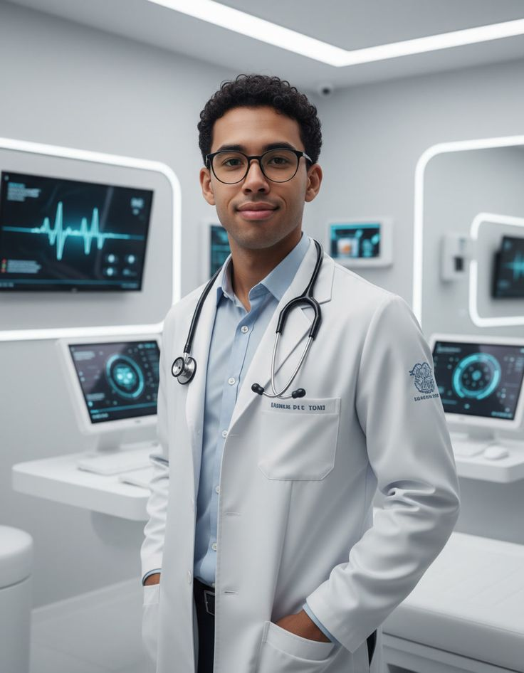
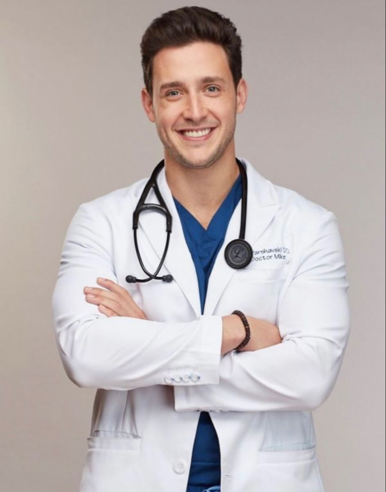
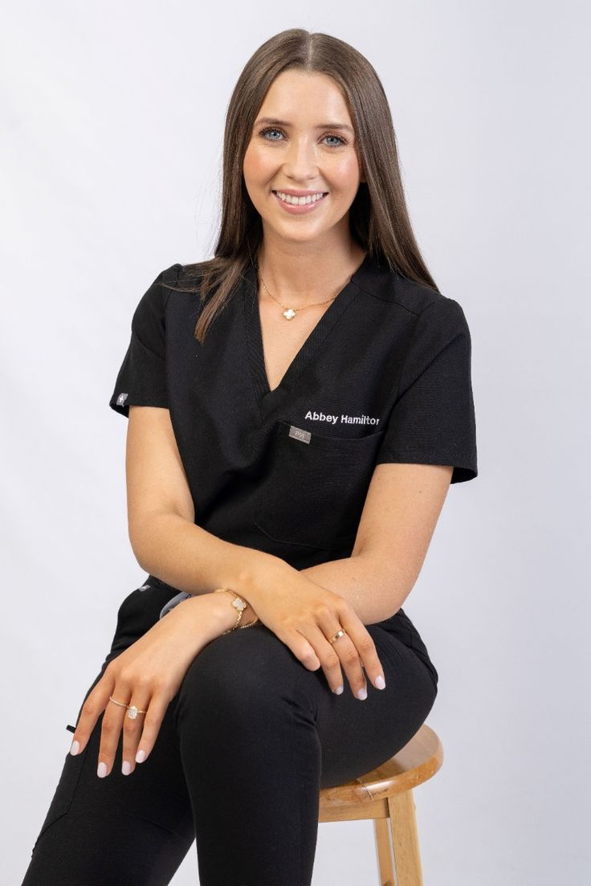
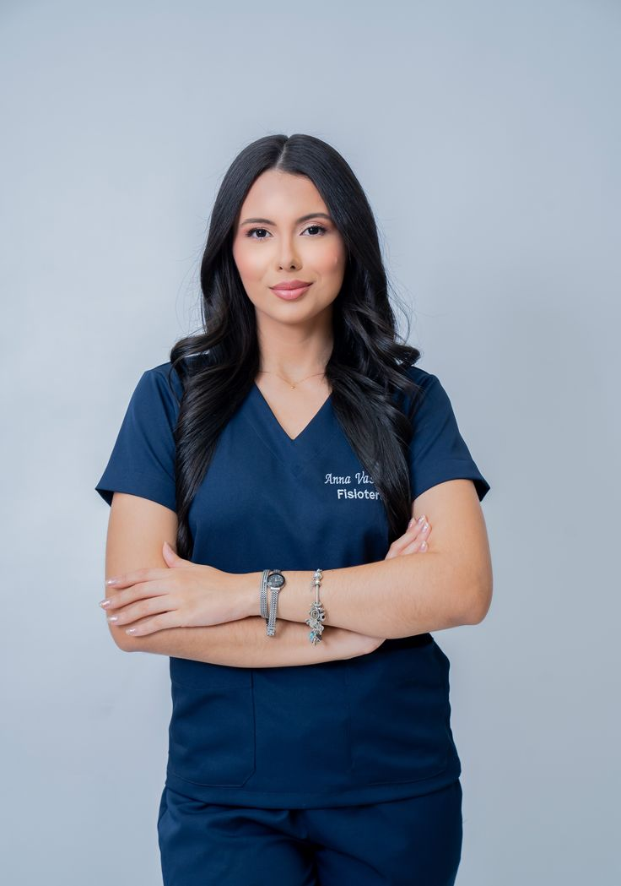
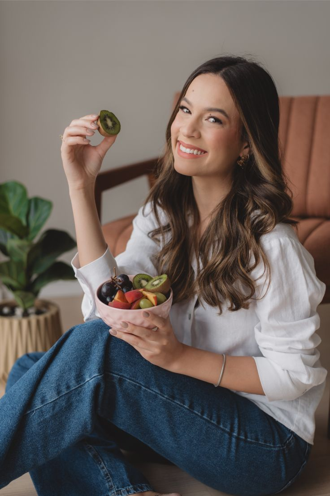
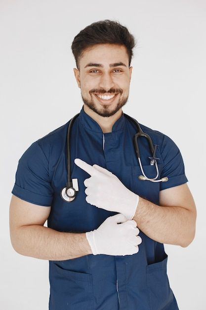

Nossa equipe é formada por profissionais altamente qualificados, com sólida formação acadêmica e experiência prática nas suas áreas de atuação.
Cada membro é preparado para oferecer um atendimento seguro, ético e humanizado, unindo conhecimento técnico e sensibilidade no cuidado com o paciente.

Dra. Mariana Couto Ribeiro
Médica formada pela UnB, residência em Clínica Médica pelo Hospital de Base do Distrito Federal.

Téc. Rafael Nogueira Barros
Técnico de Radiologia formado pelo Instituto Federal de Brasília, capacitação em Diagnóstico de Imagem.

Dr. Lucas Almeida Ferreira
Médico formado pela UFG, especialização em Atenção Primária à Saúde pela Fundação Oswaldo Cruz.

Enf. Patrícia Gomes Cardoso
Enfermeira formada pela UnB, especialização em Urgência e Emergência.

Dr. André Lefèvre Santos
Médico formado pela UnB, residência em Radiologia pela Sorbonne Unuversitè.

Téc. Ana Clara de Souza Lima
Técnica de Enfermagem formada pelo SENAC.

Isabella Fontes Duarte
Nutricionista formada pela UFMG, pós-graduação em Nutrição Clínica Funcional pela USP.

Téc. Bruno Henrique Texeira Rocha
Técnico de Enfermagem formado pela Escola Técnica de Saúde de Brasília.
O constante aprimoramento e a dedicação à excelência garantem um serviço confiável e de qualidade em todas as etapas do atendimento.